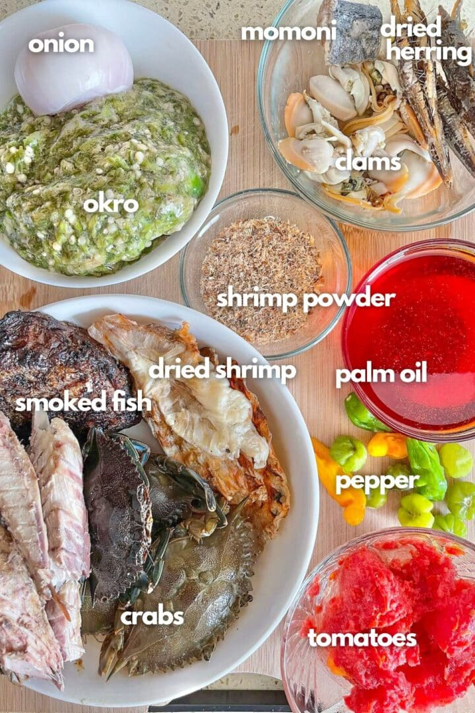
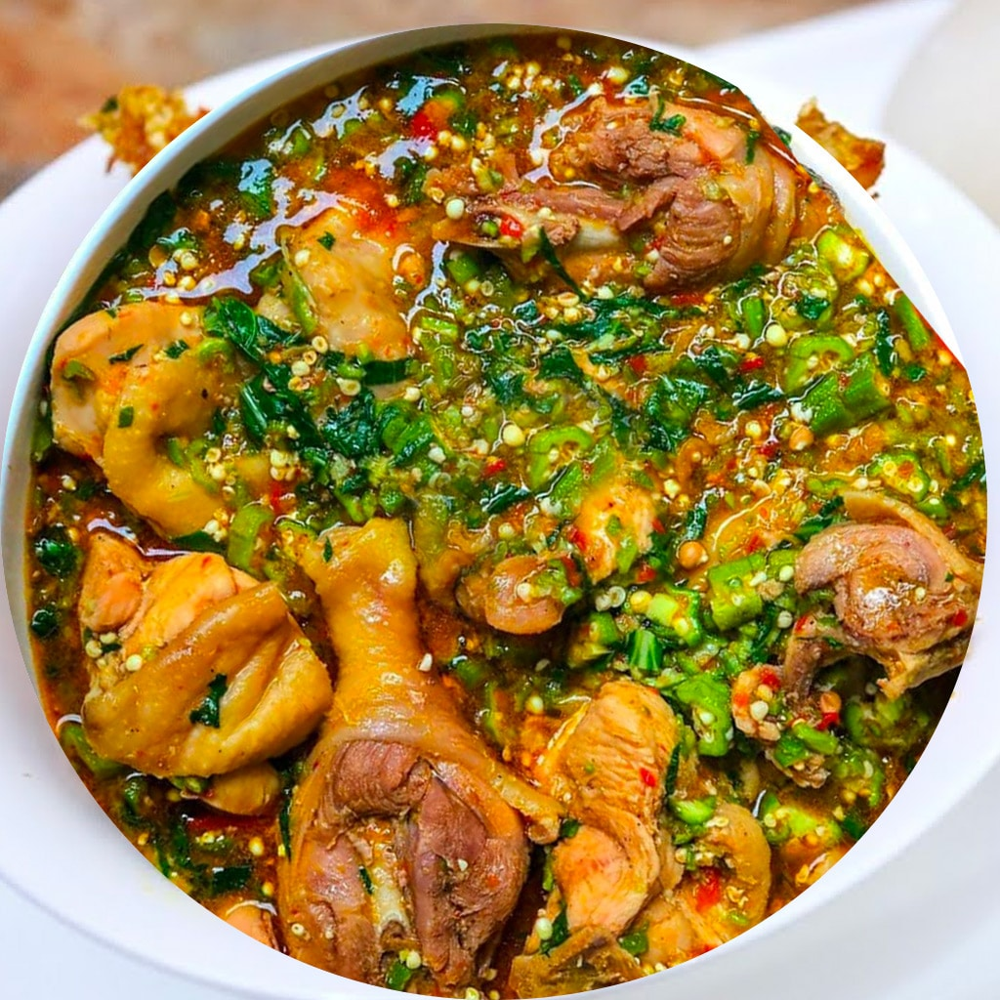
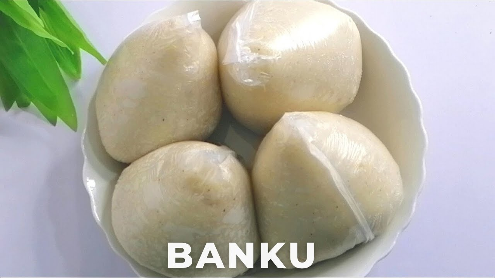

Banku and okro soup is one of the popular favourite dish in ghanaian
homes. It is eaten in all the regions of Ghana. Okro dishes are also
popular across West Africa and other parts of the world.
Banku is made of a mixture of maize and cassava dough, whiles the okra
fruit is the main ingredient for okro soup.
Let's start with okro soup.
Ingredients for okro soup
1 medium-sized salmon
1lb smoked turkey
1 pound Okro
6 crabs
2 cloves garlic
3 medium tomatoes
1 large onions
1 tsp grated ginger
2 chili peppers
3 garden eggs
½ cup mushrooms
½ cup palm oil
2 cubes of bouillon cubes
momoni
Salt to taste

Instructions
Chop half of the pound of okra, then grate the other half. The smaller
you cut the okra, the better the draw will be.
Cut the stalks off the garden eggs and cut them in half.
Soak the garden eggs and the okra for 10 minutes before transferring
them to a pot to boil until the garden eggs turn translucent. Remove
from flame.
In a separate pot, pour ½ cup of palm oil. When the oil is hot,
add the onion, momoni
(Momoni is a traditional Ghanaian fermented fish, often called
"stinky fish," renowned for its pungent aroma and deep umami flavor
used to enhance soups and stews), ginger, bouillion cubes, ground chili pepper and garlic. (Optional:
add some ground ginger). As the mixture softens, add tomato and
mushrooms, and continue to let it simmer over the fire.
Allow the pot with the palm oil mixture to continue cooking for 2 to 3
minutes before adding the smoked turkey, fish and crabs. Once the
turkey, fish and crabs are sufficiently cooked, add the okra mixture.
Add the okra into the mixture by turning it from the bottom of the pot
to the top. Allow the mixture to cook for another 10 minutes.
The okra is added last in order to avoid over-cooking it.
Serve when ready alongside banku
Banku is one of Ghana's staple foods. it is a starchy food which has
near tastelessness and it makes it a perfect base to sop up the spicy
and earthly flavors of rich stews like okro soup
Ingredients for banku
2 cups water
1 pound cassava dough
2 pounds corn dough
Salt to taste
Instructions
Mix the 1 cup of water and cassava dough then pour the mixture through
a sieve to ensure that all the unmilled pieces of cassava and any
other residue are eliminated.
Add the corn dough to the cassava dough.
Add some salt and mix thoroughly until the mixture thins and becomes
smooth.
Put the pot over medium fire and continue to mix. The banku
will become more difficult to stir, but continue to mix in order to
ensure it does not become lumpy. Add about one cup of water and cover
the pot for 5 minutes to allow the water to evaporate and cook the
banku further. During this time, stir the banku intermittently.
When the banku is ready, shape it into a small ball using a spoon.
Alternatively, if you won't eat all of the banku at once, spoon out
portions into small plastic bags and roll up the ends.


Nutritional Facts
Banku and okro stew is a highly nutritious, energy-dense Ghanaian dish
rich in fiber, vitamins C and K, potassium, and antioxidants. A medium
bowl generally contains around calories, of carbohydrates, of fat, and a
high of protein. It is particularly effective for high energy needs,
using fermented corn and cassava dough.
Key Nutritional Components (Per Serving)
Calories:≈ 294-535 kcal
Protein: (depending on the amount of fish/meat/crabs added)
Carbohydrates:
Fat: (higher if palm oil is used heavily)
Fiber & Micronutrients: High levels of Vitamin C, K, folate,
magnesium, and zinc